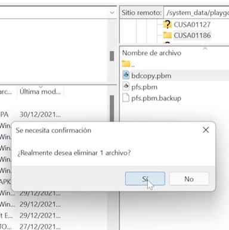

Backup fpkg
Podemos hacer Copias de seguridad de nuestros juegos físicos o digitales
Para esta Guia
Requisitos para este tutorial
- PC o Notebook con Windows 7, 8, 8.1, 10
- Para descomprimir archivos .rar o .zip
Programas para este Tutorial
| Archivos | Servidores | |
|---|---|---|
| Backup fpkg | Mega | |
Para Empezar este Tutorial
- El juego a copiar
- Antes de empezar debemos tener el juego (Disco) instalado en nuestra consola
- Y si queremos le instalamos el parche que corresponda a la versión que tiene nuestra consola para esto podemos usar Patch Installer para buscar los parches del juego
- El USB
- Necesitamos un USB o Disco externo con la suficiente memoria para almacenar el Juego que queramos respaldar
- Y dejarlo conectado a nuestra consola
- Para empezar
- Debemos abrir el juego y dejar el juego en el Menú principal del juego
- Una vez listo minimizamos el juego para volver al menú principal de la consola
- Buscaremos en Gold HEN/Servers Settings/ Enable FTP Server y lo habilitamos
- Y recordamos la IP y el Puerto de nuestra consola y vamos a nuestro PC
- Abrimos FileZilla Client en nuestro computador y colocamos la ip y el puerto
- Ahora vamos a la ruta /system_data/playgo en nuestra consola y dentro buscaremos el ID de nuestro juego a copiar
- Si dentro encontramos un archivo llamado bdcopy.pbm lo borraremos para evitar que se copie nuestro juego 
- Ahora volvemos a nuestra consola y vamos a nuestra pagina WEB de preferencia (Mi WEN) y activaremos el Game-Dumper
- Ahora esperamos a que se copie al USB una vez terminado de copiar la consola se reiniciara
- Colocamos el USB en nuestra computadora y veremos los archivos
- Ahora solo nos serve las carpetas con el ID-app y ID-patch del juego
- Ahora veremos los trofeos que no estén encriptados ID-app/sce_sys/trophy y el archivo trophy00.trp lo movemos a la aplicación HxD.exe
- En la aplicación HxD.exe vemos algunas letras como las de la Imagen significa que no esté encriptado son letras que se pueden leer
- Aremos lo mismo para las actualizaciones ID-patch/sce_sys/trophy y el archivo trophy00.trp lo pasamos el mismo programa
- Si encontramos alguno de estos encriptados para solucionarlo debemos ir a nuestro PC y abrir el FileZilla Client y buscaremos la siguiente ruta en nuestra consola
/user/trophy/conf - Si no sabemos el ID buscaremos el archivo en los archivos copiados a nuestro USB en la Ruta ID-patch/sce_sys/ y veremos el archivo npbind.dat y lo pasamos al programa HxD.exe
- Y nos indicara claramente el Id del juego
- Una vez encontrado debemos ir a el USB e ir a ID-parth/sce_sys/trophy y copiaremos el nombre del archivo y lo eliminamos y copiamos el archivo de la nuestra consola a nuestra copia
- Una vez termino descomprimimos el archivo PS4-Fake-PKG-Tools-3.87-main.rar y buscamos gengp4_app.exe y lo abrimos buscamos la carpeta app y le damos al botón Generate .GP4
- Cuando termine le damos a Save .GP4 donde mismo están los archivos
- Ahora hacemos lo mismo, pero con el gengp4_patch.exe y hacemos lo mismo
- Ahora cuando tengamos la app y patch .GP4, abrimos orbis-pub-gen.exe para crear el archivo pkg
- Al abrir el archivo seleccionamos la app y le seleccionamos donde se guardará el archivo
- Y repetimos lo mismo con el patch
- Ahora vamos donde guardamos los archivos y estaríamos listo
- Ahora los instamos en nuestra consola para probar
- Listo

×